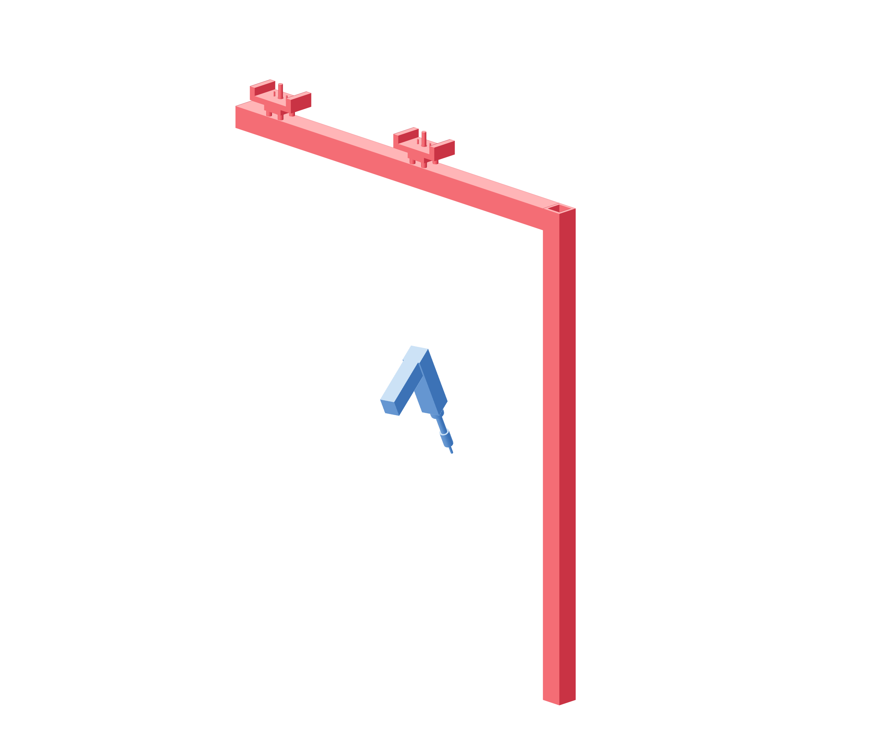

Payload / independent support97 / 179
Support the umbilical independently
The metal boom carries cable weight above the gun workspace. Gentle slack follows motion without pulling the gun or moving either camera.
Add4040 × 900 mm post · 4040 × 750 mm arm · metal corners · 2 fiber-saddle · straps
Tools / setup6 mm hex · gun cable manufacturer bend guidance

- Through-bolt the post's metal base joints to the bench outside the motion/camera frame.
- Join the arm with metal corners and place the two padded saddles on it.
- Route the umbilical with loose supported loops using the gun manufacturer's minimum bend radius.
- Move the supported empty cradle through the intended local poses and adjust slack before clamping the gun.
Ready when
The umbilical does not carry frame load, pull a camera or tighten at an intended pose. Its permitted bend radius is documented. Cable tension or an undocumented bend can dominate corrections or damage the cable. Correct the support path before loading the gun.